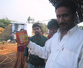
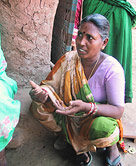
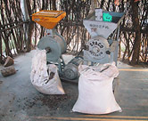

|
 |
 |
Puntos de
Inflexión Ecológica
- Cómo funcionan?
- Transformando círculos viciosos a círculos virtuosos
- Ingredientes para el éxito
- Elaboren sus propios Puntos de Inflexión Ecológica
Historias por Región
Historias por Tema
- Agricultura
- Agua y Cuencas
- Bosques
- Ecosistemas Urbanos
- Educación
- Energía
- Negocios
- Pesquerías
- Salud Pública
Videos Cortos
- Salvando un arrecife coral y una pesquería
(Filipinas) - Revitalizando vecindades urbanas con jardines comunitarios
(Nueva York) - Revirtiendo la deforestación tropical con bosques comunitarios
(Thailandia) - Rellenando aguas subterráneas con captación pluvial
(Rajastán, India) - Escapando la trampa de pesticidas
(India)
Explicando el Éxito
- Salvando un arrecife coral y una pesquería
(Filipinas) - Revitalizando vecindades urbanas con jardines comunitarios
(Nueva York) - Revirtiendo la deforestación tropical con bosques comunitarios
(Thailandia) - Rellenando aguas subterráneas con captación pluvial
(Rajastán, India) - Escapando la trampa de pesticidas
(India)

Ecología Humana: Presenta los principios de la ecología humana que sirven de fundamento a los Puntos de Inflexión Ecológica
La Limpia: Recuperándose de la Adicción a Pesticidas
- Autor: Gerald Marten and Donna Glee Williams
- Una versión abreviada de este artículo fue publicada en The Ecologist, Vol. 36, No. 10 (Diciembre 2006), p. 50-53
- Lea la historia detallada
- Pulse sobre la foto para ver los detalles


Lata de pesticidas
La economía de adicciones puede resumirse en pocas palabras: Venda un producto que haga que el comprador necesite más.
Se han hecho mega-fortunas en base a este principio. Pero las industrias del alcohol, tabaco, cafeína y drogas están limitadas por tener que crear adictos uno a la vez. La industria agro-química tiene una visión mucho más amplia: la dependencia química que cautiva a bioregiones enteras.
Hace aproximadamente dos décadas, llegó la producción de algodón al distrito Khamman en el estado de Andhra Pradesh, India. Seducidos por la industria agro-química, los agricultores abandonaron sus variados cultivos tradicionales para cultivar algodón con pesticidas. Aparecieron, y prosperaron, insectos resistentes a los pesticidas. Para combatirlos, los agricultores aplicaron aún más pesticidas, endeudándose, empeorando el problema de la resistencia y creando severos problemas de salud para su comunidad.

Preparando la solución
de Nim
La introducción del algodón fue un punto de inflexión ecológica, un cambio abrupto de la sostenibilidad a la insostenibilidad. Esta inflexión los llevo a la trampa de la adicción agrícola a los pesticidas químicos. Este proceso se ha repetido en tantas miles de aldeas que no sería noticia si no fuera por una cosa: los Puntos de Inflexión Ecológica no son calles de un solo sentido. Una comunidad agrícola llamada Punukula venció la adicción y se deshizo de los traficantes de pesticidas. Al "decir no" a los pesticidas, su medio ambiente regresó a una agricultura que no solo cultivaba algodón, sino la salud de personas, comunidades y ecosistemas. Hoy en día, el modelo libre de pesticidas de Punukula se propaga a aldeas en toda la región.
¿Cómo pudo una pequeña aldea frenar la avalancha de químicos que amenazaba con ahogarla en deuda, enfermedad, y devastación ambiental? Metafóricamente tiraron un piedra en la corriente justo donde podía cambiar el curso del arroyo. Al igual que otras historias de puntos de inflexión con final feliz, la de Punukula consistió en poner en marcha cambios catalíticos que repercutieron en todo el sistema, redirigiéndolo sobre el camino que nutre a la vida.
Atrapados: la inflexión a la Ruina
Hace aproximadamente veinte años, un puñado de familias migraron del distrito Guntur a Punukula, una comunidad agrícola de aproximadamente 900 personas donde cada familia típicamente cultivaba entre 1 y 4 hectáreas. Los recién llegados de Guntur trajeron consigo el cultivo del algodón. El algodón sedujo a los agricultores prometiéndoles más dinero en efectivo que el que obtenían de las cosechas que entonces comían y vendían: mijo, sorgo, cacahuates, gandul, garbanzo verde, chiles y arroz. Pero el cultivo del algodón necesitaba pesticidas y fertilizantes. Estos insumos químicos eran un misterio para los Punukulenses, y no había servicio alguno de asesoría agrónoma para estos pobres, y en su mayoría analfabetos, agricultores.

Mampara educativa
sobre el MPSP
Los comerciantes de agro-químicos gustosamente les ofrecieron información y materiales. Estos "intermediarios" vendían semillas, fertilizantes e insecticidas a crédito y garantizaban la compra de la cosecha. Brindaron asesoría técnica (con algo de interés personal) que ofrecían las empresas cuyos productos vendian: Bayer, Syngenta, Dupont, Monsanto y Denosyl. Los agricultores se hicieron dependientes de los comerciantes. Si querían cultivar algodón - y sí querían - no tenían otra opción.
Las grandes cosechas y elevados ingresos de los primeros años convencieron a los agricultores de la región. Los costos por pesticidas eran relativamente bajos porque las plagas del algodón aún no habían llegado. Muchos agricultores quedaron tan impresionados con los químicos que empezaron a usarlos en sus otros cultivos. Las ganancias inmediatas de la agricultura química del algodón garantizaron que las tierras fértiles cayeran en una picada de degradación ambiental causada por una cadena de causas y efectos, al mismo tiempo que dichas ganancias ocultaron esta realidad.
Atraídos por el banquete de monocultivo preparado por los agricultores, las plagas del algodón, como el gusano cogollero (Helicoverpa armigera), la lagarta rosada (Pectinophora gossypeilla), el gusano fitófago el algodón (Spodoptera litura), los saltahojas, y áfidos, infestaron los campos. La aplicación repetitiva de pesticidas mató a los más susceptibles y dejó vivos a los mas fuertes, para que estos se reprodujeran y pasaran su resistencia a generaciones cada vez más resistentes. Al hacerse más resistentes y más abundantes las plagas, los agricultores aplicaron mayor variedad de pesticidas en mayor cantidad, a veces en "cócteles" de hasta diez insecticidas. Al mismo tiempo, el algodón devoraba los nutrientes de la tierra, obligando a los agricultores a invertir en fertilizantes químicos.


Una aldeana
de Punakula
La adicción a los pesticidas involucró a todos y a todo en una red de circuitos de retroalimentación y reacciones en cadena que causaron estragos en el ecosistema y el sistema social. Al escalar los desembolsos por fertilizantes y pesticidas, aumentó el costo de producir algodón. Eventualmente los gastos de los insumos químicos superaron el valor comercial de la cosecha. Dado que los agricultores compraban semilla y químicos a crédito, sus ingresos disminuyeron y los intereses sobre su deuda menguaron su sustento. Acumularon más y más deuda, obligándolos a trabajar más y más. Cuando la pobreza ataca de todos lados, la supervivencia familiar puede obligar hasta el trabajo infantil. Se abandona la educación, garantizando generaciones futuras de pobreza.
La adicción a los químicos agrícolas impactó en la salud, además del bolsillo. Todos los miembros de la familia compartían la labor de aplicar pesticidas. Lo hacían sin capacitación, lo cual limitó la efectividad de los químicos - y significó que utilizaban más de lo necesario. Al carecer de información sobre su almacenamiento y uso seguro, todos estaban expuestos a sus efectos tóxicos, incluyendo a mujeres y niños. El envenenamiento por pesticidas se hizo común. Aparecieron problemas crónicos de salud, tales como dolores de cabeza, nauseas, urticarias, fatiga, síntomas mentales y problemas de visión, así como envenenamientos agudos que requerían hospitalización y a veces causaban daños neurológicos permanentes o incluso la muerte. Las personas no fueron las únicas víctimas. Morían vacas y cabras al pacer demasiado cerca de los campos tratados.

Aplicando chile y ajo
Únicamente el algodón tenía el potencial de ingresos necesario para pagar las deudas adquiridas con los comerciantes, prestamistas y servicios médicos. Para cuando algunos agricultores intentaron romper con su dependencia química, los insecticidas ya habían arrasado con las poblaciones de aves, avispas, escarabajos, arañas y demás depredadores que antaño controlaban naturalmente a las plagas. Sin su presencia equilibrante, las plagas arrasaban en la ausencia de insecticidas. Los agricultores estaban atrapados.
En una inflexión negativa, los círculos viciosos parecen abrumadores. Algunos agricultores escaparon a otros lugares, otros trabajos. Otros se dedicaron a actividades ilegales, como el contrabando de teca, para lidiar con sus deudas. Cuando tantas cadenas de causas y efectos nos arrastran al abismo, el desastre puede parecer inevitable. Fácilmente surge la desesperación. Los suicidios se hicieron cada vez más comunes entre los agricultores, siendo el método favorito la ingestión de pesticidas.
Limpiándose: La Inflexión hacia la Restauración.
El árbol del Nim (Azadirachta indica) es la columna vertebral de la recuperación de Punukula. El Nim es un árbol siempre verde, de hoja ancha y crecimiento rápido, pariente de la caoba. Se protege de insectos produciendo una multitud de pesticidas naturales de funcionamiento variado. Inhiben el desove, la eclosión del huevo, e interfieren con el crecimiento. De mayor consecuencia, la azadiractina en el Nim obstruye la alimentación y mata de hambre a los insectos. Debido a la amplia gama de defensas químicas en el Nim, los insectos enemigos no pueden desarrollar resistencia con simples mutaciones sencillas. Y porque el arsenal de toxinas evolucionó específicamente para derrotar a insectos que comen plantas, generalmente son inertes para los humanos y otros animales, e inclusive para aves e insectos que comen a los insectos plaga. El Nim prospera en regiones calurosas como el distrito Khamman.
Para revertir un círculo vicioso, es necesaria la perspectiva fresca de un forastero que complemente el conocimiento íntimo de la problemática de un lugareño. Para Punukula esa combinación paradójica se dio en la persona de K. Venu Madhav. Venu Madhav creció en Kokkeireni, una aldea como a 100 kilómetros de Punukula. Se crió en una granja que dependía de los pesticidas; había visto como ahogaron a su padre en deudas. Fue testigo ocular del sufrimiento causado por los envenenamientos por pesticidas en su propia aldea. El hecho de que su padre agricultor también conocía remedios naturales pudo haberlo predispuesto a tener una mente abierta ante las posibilidades botánicas.

Margam Mutthaiah
Despues de trabajar algunos años como agricultor, Venu Madhav acepto un empleo con una ONG local de nombre SECURE (Socio-Economic and Cultural Upliftment in Rural Environment). SECURE ayuda a comunidades rurales a desarrollar programas participativos de gestión de recursos naturales, apoderar a mujeres, y fortalecer gobiernos locales. La organización originalmente llegó a Punukula para desarrollar un programa de cuenca, pero no pudo ignorar las pérdidas de cosechas, hospitalizaciones frecuentes debidas a envenenamientos por pesticidas, y demás miserias causadas por la trampa de los pesticidas. Tres aldeanos se habían suicidado por sus deudas.
Venu Madhav buscaba una salida de la trampa de los pesticidas cuando M.V. Shastry del Centro para la Solidaridad Mundial (www.cwsy.org) le platicó de sus experiencias con métodos naturales de control de plagas agrícolas. El Centro para la Solidaridad Mundial, y después el Centro para la Agricultura Sostenible (www.csa-india.org), unieron fuerzas con SECURE, brindándole el apoyo técnico para comenzar a promover las alternativas naturales a los pesticidas químicos.
Alrededor del 1998, Venu Madhav comenzó a platicar con los agricultores de Punukula sobre como cambiar la manera en que cultivaban algodón. Los aldeanos se mostraron escépticos, pero SECURE fue insistente. SECURE organizó el viaje de algunos aldeanos a Warangel, a 400 Km. de distancia, para visitar a Kattula Mallamma, una señora que utilizaba los métodos naturales de manera exitosa. Vieron de primera mano que sí era posible.

Los ingredientes
de chile-ajo
Finalmente, después de un año, SECURE encontró al pionero influyente que necesitaba. Margam Muttajah era un respetado anciano con una gran deuda agrícola. Un día su hijo colapsó de un envenenamiento agudo que lo dejó inconsciente durante una semana. El joven sobrevivió pero la cuenta del hospital fue de 18,000 rupias, una suma abrumadora para una familia agrícola.
Muttajah estaba listo para intentar algo diferente. Había sido uno de los primeros en cultivar algodón. Ahora sería el primero en intentar hacerlo sin químicos. Venu Madhav y personal de SECURE capacitaron a Muttajah en lo que llamaron Manejo de Plagas sin Pesticidas (MPSP), un programa de abstinencia de los químicos agrícolas.
El primer paso fue usar el Nim. En esto Punukula recurrió a su memoria ecológica y social, aliados frecuentes en los casos exitosos de puntos de inflexión ecológica. La planta es nativa de la India y de Myanmar donde se ha utilizado durante siglos para controlar plagas y promover la salud. Aún estaba presente en el distrito de Khamman. El ecosistema aun lo "recordaba". Y aunque parecía fantasioso que una humilde planta local ("el Nim con que nos lavamos los dientes", según el aldeano Hemla Kayak) pudiera superar a los sofisticados y exóticos químicos, su uso consistiría simplemente en adaptar un remedio tradicional a la problemática actual.


Molino de semillas de Nim
Para proteger el algodón, las semillas de Nim son molidas hasta hacerlas polvo que se inmersa en agua, y la solución es rociada sobre los cultivos por lo menos cada diez días. El tratamiento con Nim interrumpe la alimentación, desarrollo y reproducción de los insectos destructivos sin dañar a las aves o a los insectos benéficos que brindan un control natural de las plagas. La aplicación de Nim sólido a la tierra mata plagas y patógenos en la tierra y además sirve como fertilizante con alta concentración de nitrógeno. El Nim crece localmente y es fácil de procesar, y es mucho más barato que los insecticidas químicos vendidos por los comerciantes y sus proveedores corporativos.
El uso del Nim se complementa con otros métodos:
- Aplicando una solución de chile-ajo al algodón, particularmente en casos de infestación severa. El chile-ajo hace que los insectos caigan de la planta, pero no daña a los insectos que se comen a las plagas.
- Aplicando una mezcla de estiércol y orines de vaca para combatir a los saltahojas, áfidos, arañuelas y otros insectos. Mientras que el estiércol y orines son fertilizante natural, aplicando la muestra sobre las plantas inhibe el desove de los insectos sobre las hojas y obstruye su alimentación.
- Aplicando un virus nucleopolihedro que infecta al gusano cogollero. El virus le es fatal al mismo, pero inofensivo a otras criaturas. Los agricultores mismos pueden administrar esta "arma biológica". Las larvas infectadas cuelgan de cabeza de los bordes de las hojas, y así pueden ser recolectados fácilmente, molidos y puestos en solución que se aplica al cultivo con resultados letales para las plagas.
- Plantando "cultivos trampa" como el sorgo, caléndula, ricino y maíz alrededor de los campos para distraer a las plagas y alejarlas del algodón.
- Removiendo y quemando las ramas infestadas.
- Observando las plantas para monitorear la abundancia de insectos plaga y usando tabletas de feromonas baratas que atraen al gusano cogollero para contarlo. Con esta vigilancia, los agricultores pueden ahorrar tiempo y dinero al tratar sus campos solo cuando lo necesitan.
- Colocando tablas amarillas cubiertas de grasa pegajosa para atrapar moscas blancas y tablas blancas para atrapar arañuelas.
- Encendiendo pequeñas fogatas en las noches sin luna para atraer y matar polillas del gusano cogollero.
- Reclutando aves como aliados al plantar percheros en los campos.
- Arando profundamente en verano para interrumpir el ciclo de vida del gusano cogollero y otras plagas cuyas pupas se encuentran en la tierra.
- Enriqueciendo la tierra con vermicomposta y estiercol de vaca, lo cual podría convertir a los aldeanos en agricultores orgánicos, lo cual podría tener implicaciones futuras al crecer el mercado del algodón orgánico.
Los resultados obtenidos por Margam Muthaiah fueron lo suficientemente buenos como para persuadir a veinte agricultores de intentar el MPSP el año siguiente. Para capacitar, ayudar y facilitar la resolución de problemas a nivel comunitario, SECURE colocó a dos miembros de su personal en Punukula, un hombre y una mujer.
Las mujeres tuvieron un papel clave en lograr el éxito de la nueva estrategia. Conocían muy bien el impacto de los pesticidas sobre sus familias. Convencieron a sus esposos de intentar el MPSP y de hacerlo correctamente. Recolectaron semillas de los árboles Nim que aún había en la región. Prepararon las soluciones de Nim y de chile-ajo. Al igual que los efectos devastadores de la adicción a los pesticidas, la labor de librarse fue compartida.

Moliendo semillas
de Nim
Las ganancias rápidas a corto plazo habían impulsado a Punukula a una agricultura química. Ahora que habían cambiado algunos factores clave en el círculo vicioso - al sustituir MPSP por pesticidas - encontraron similares utilidades inmediatas que les ayudaron a acelerar el paso en dirección contraria: la cosecha de los veinte agricultores MPSP fue igual de buena que la de los agricultores que usaron insecticidas, pero ganaron más por no haber gastado dinero en insecticidas. En vez de invertir el poco dinero que tenían en químicos, invirtieron su tiempo y labor (recursos más abundantes) en las prácticas del MPSP.
Los circuitos de retroalimentación comenzaron a amarrar los cambios, esta vez, para bien. La abstinencia de pesticidas resultó en menor resistencia a pesticidas y mayor resiliencia en el ecosistema y el sistema social. Permitió que las aves y otros depredadores de plagas aún en la "memoria ecológica" regresaran y ejercieran un control natural.
Los cambios tomaron fuerza. Para el año 2000, todos los agricultores de Punukula usaban el MPSP para el algodón y habían comenzado a utilizarlo en sus otros cultivos. Los campos ya no eran infestados por brotes de plagas que originaban en campos vecinos. Al recuperarse las poblaciones de los enemigos naturales de las plagas, las aplicaciones de Nim dejaron de ser necesarias tan frecuentemente.
Al utilizar menos químicos, se redujeron los gastos médicos y el costo de producir la cosecha, lo cual significó menos deuda. Con menos deuda hubo menos trabajo infantil, más familias completas y más educación para generaciones futuras. La mejora educativa resultará en mayores ingresos y un mejor entendimiento del MPSP.
Esta mejor situación financiera permitió a familias cultivar más tierra, contratando mano de obra. La recolección, molienda y venta de Nim para el MPSP en otras aldeas se convirtió en una nueva fuente de ingreso y prestigio par alas mujeres. Al dejar de envenenarse, los aldeanos recuperaron tiempo, energía, dinero y salud que utilizaron en iniciar otros proyectos empresariales y comunitarios. La epidemia de suicidios llego a su fin.
Hoy en día los contenedores de insecticidas ya no contaminan a Punukula. La aldea ya no apesta a químicos. Los aldeanos dicen que no se dieron cuenta del daño que les causaba tanto veneno hasta que dejaron de usarlos. Las mujeres sonríen y dicen que los "hombres tienen más vigor". El luchar contra los pesticidas, y ganar, aumentó la solidaridad, confianza y optimismo comunitario. Cuando los comerciantes de pesticidas intentaron tomar represalias pagando menos por la cosecha, los agricultores organizaron una cooperativa que buscó y encontró un precio más justo en otro lado.
El éxito con los puntos de inflexión ecológica requiere de pioneros persistentes. Las habilidades de liderazgo y cooperación que desarrollaron los ciudadanos de Punukula en su lucha les acompañan cuando enfrentan otros retos. Los aldeanos tienen grandes planes para el futuro - purificación de agua, educación superior, y desmotar el algodón en su misma aldea - y ya no tienen miedo de exigir la atención debida por parte del gobierno.
Aunque los individuos trabajan sus propios predios y sus propios cultivos, la sinergia de una abstinencia comunitaria de los químicos reveló que los agricultores dependían de recursos comunes, compartidos por todos. En Punukula, estos recursos comunes no solo incluyen el aire y el agua, sino también las poblaciones de los depredadores de insectos.
Al reconocer los interesados el valor de estos recursos comunes, desarrollan instituciones para gestionarlos y protegerlos. Punukula ha tomado medidas para evitar que las corporaciones químicas promuevan pesticidas en su pueblo. El manejo de plagas sin pesticidas es enseñado en la escuela y predicado en toda la región.
En el 2004 el panchayat (gobierno de la aldea) oficialmente declaró a Punukula como una aldea libre de pesticidas.
El éxito genera éxito
Al igual que otros adictos, Punukula siente el llamado a ayudar a otras aldeas a escapar de su dependencia química. La misma necesidad de asesoría técnica sobre el cultivo de algodón que convirtió a los agricultores en presa fácil, ahora ha abierto la puerta a estrategias alternas. Margam Mutthajah se ha convertido en un vocero seguro y elocuente a favor del manejo de plagas sin pesticidas. Su aldea sirve de modelo para promover el MPSP a otras comunidades, y la visitan aproximadamente 2,000 agricultores al año. SECURE y otras ocho ONG colaboradoras han ayudado a aproximadamente doscientas aldeas a implementar el MPSP. SECURE está enseñando el programa a niños en 27 escuelas.
La industria de pesticidas y sus comerciantes han intentado frenar la difusión del MPSP. Pero a pesar de sus esfuerzos el ministro de agricultura de Andhra Pradesh, Sri N. Ragu Veera Reddy, visitó Punukula y declaró que el estado agregará el MPSP a su programa para la erradicación de la pobreza rural. SECURE está capacitando a participantes en el programa.
Lo que comenzó con unos cuantos agricultores desesperados por encontrar la manera de cultivar sin veneno, se ha convertido en un movimiento con el potencial de evitar el desastre ecológico en toda la región.
Los héroes de Khamman incluyen a individuos, organizaciones e instituciones cívicas con principios. Pero podemos tomar aún más inspiración, y lecciones más profundas, de la manera en que el ecosistema mismo actuó con principios.
A la naturaleza "le gusta" la estabilidad; es evidente en la elegancia de los mecanismos de homeostasis que mantienen en equilibrio a sistemas complejos. Pero tienen su límite. Si las presiones externas (digamos por ejemplo, las corporaciones avaras) fuerzan demasiados cambios al sistema, mas de lo que los mecanismos equilibrantes pueden soportar, resulta el caos.
Y después se re-organiza, por supuesto. Pero quizá no nos guste la nueva estabilidad. Quizá ya no sea lo que necesitamos los humanos. Y así, cuando el colapso es inminente, intentamos intervenir. Al aparecer las grietas intentamos taparlas, al igual que el mítico niño holandés con el dedo en el hoyo del dique. Pero surgen grietas por doquier, y tenemos pocos dedos. Podemos despachar a todos los holandeses del mundo a tapar todos los hoyos, pero a menos que encontremos el punto crítico, el sistema colapsará. Y no podremos evitarlo.
Hasta que Punukula encontró su punto de inflexión ecológica - el reemplazar los pesticidas químicos con MPSP - no importaba cuantas iniciativas de salud, o grupos de apoyo mutuo, o rescates de niños trabajadores, o súper insecticidas se intentaran. Esos esfuerzos eran como intentar parar el carrusel lazando a uno de los caballos - un esfuerzo galante, pero inútil. Tuvieron que encontrar el interruptor que lo controla. El interruptor fue el uso de pesticidas y cuando lo apagaron el carrusel de adición dejo de dar vueltas.
En un mundo donde los recursos, la voluntad política y la paciencia con labores de restauración ambiental son escasos, Punukula nos enseña a no gastar nuestras energías resistiendo la inercia de los círculos viciosos. Si queremos seguir el ejemplo de esta pequeña aldea, estudiaremos los circuitos de retroalimentación que nos arrastran a la catástrofe. Los analizaremos para comprender como revertirlos. Identificaremos los puntos clave donde un empujón en la dirección correcta pondrá en marcha los procesos naturales y sociales a nuestro favor, en vez de en nuestra contra. .
Y es allí donde actuaremos.
Gerald Marten es un ecologista con el East-West Center en Honolulu y autor de Ecología Humana: Conceptos Básicos para el Desarrollo Sustaintable (Earthscan Publications, 2001).
Donna Glee Williams es una socia del North Carolina Center for the Advancement of Teaching.
Agradecemos en especial al personal de SECURE por su hospitalidad y apoyo durante nuestra visita para documentar su éxito con el Manejo de Plagas sin Pesticidas.
Amanda Suutari y Ann Marten hicieron aportaciones valiosas en cuanto a investigación.
Mayores Informes
Una versión más detallada de como los agricultores de algodón en Andhra Pradesh escaparon la trampa de los pesticidas.
Este sitio web contiene materia traducida del sitio web www.ecotippingpoints.org.
Traducción: David Nuñez. Redacción: Gerry Marten